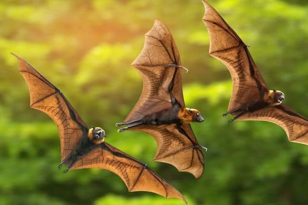

Livestock intelligence
Designing and deploying livestock information management systems, with real-time analytics for disease surveillance and productivity tracking.
CHOLD Initiative employs a systems-thinking framework combining technical innovation with grassroots engagement. Each capability below carries a defined scope, a strategic objective and the impact we hold ourselves to.
Every technical intervention, research study and policy engagement falls within five aligned pillars.
Designing and deploying livestock information management systems, with real-time analytics for disease surveillance and productivity tracking.
Conducting applied research to solve context-specific challenges and promoting indigenous knowledge alongside evidence-based innovation.
Empowering traditional leaders as development allies and bridging cultural governance with scientific advancement.
Supporting market access, infrastructure and supply chain efficiency while promoting local agribusiness and entrepreneurship.
Training stakeholders in animal health, data use and system design, building institutional capability across levels.
Select a capability to see its scope, strategic objective and expected impact.
The data backbone. Without it, every other intervention is guesswork.
Enhanced transparency in livestock value chains, improved breeding programmes and reduced duplication of effort by stakeholders.
Detection close to the herd, response coordinated from the centre.
Safer livestock trade, higher farmer confidence and minimised economic losses from epidemics.
The distinctive part of our model, and the part most often skipped.
Conflict mitigation over grazing lands, improved women's participation and preservation of indigenous knowledge.
Homegrown answers to context-specific problems.
Significantly transform the livestock sector by generating context-specific solutions that improve animal productivity, health and climate resilience.
Turning production and market data into decisions a smallholder can act on.
Increased income for farmers, reduced post-production losses and diversified livestock products such as dairy and leather.
From farm to fork, with the losses engineered out.
Higher farmer revenues, reduced spoilage and compliance with international export standards such as EU sanitary requirements.
Infrastructure that turns an early warning into an early response.
Faster containment of crises such as droughts and pandemics, and innovation in veterinary medicine.
Building the state's capacity to deliver, rather than substituting for it.
Cattle, small ruminants, poultry, pigs and working animals, alongside the wildlife interfaces where zoonotic risk concentrates.



We deliver as a technical partner on government programmes, donor-funded projects and public-private initiatives.